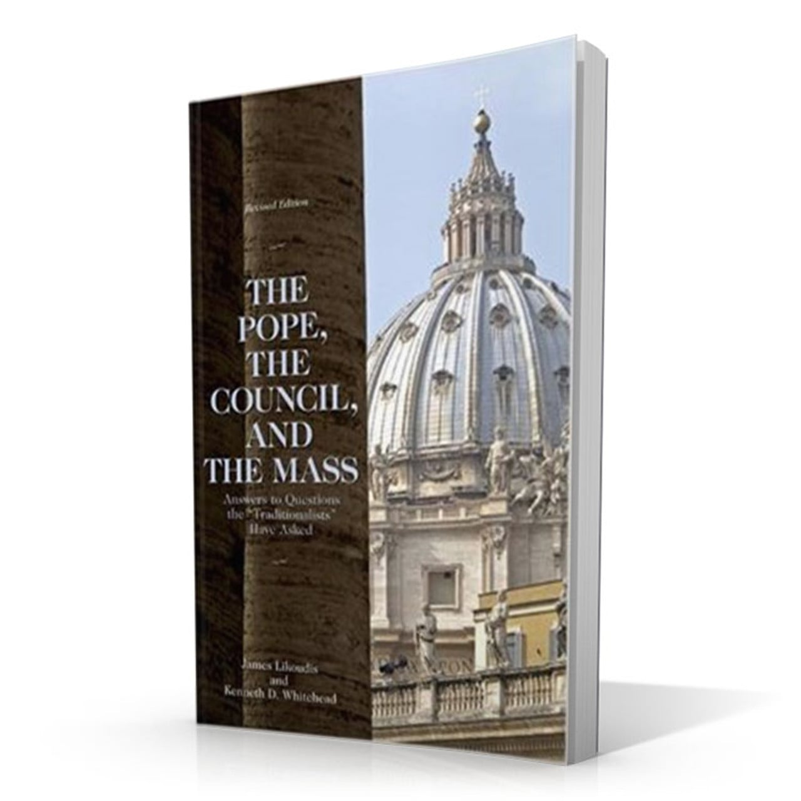
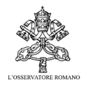
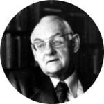
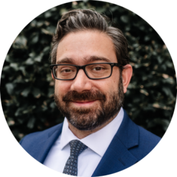
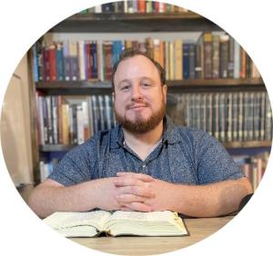

The Pope, the Council, and the Mass: Answers to Questions the “Traditionalists” Have Asked is the apologetic work that James Likoudis co-authored with Kenneth D. Whitehead. First published in 1981, as the founder of the Society of St. Pius X moved toward the illicit episcopal consecrations of 1988, it answered the central traditionalist arguments directly: that Vatican II broke with Tradition, that the reformed liturgy was illegitimate, and that the pope had exceeded his authority.
Drawing on history, canon law, magisterial documents, and Scripture, Likoudis and Whitehead defend the legitimacy of the Novus Ordo and the Christocentric vision of the Council while taking traditionalist concerns seriously and engaging them on their own terms. A revised and expanded edition of 370 pages was issued by Emmaus Road Publishing in 2006.
For the 1981 Edition

"This book has been sorely needed for well over a decade." The authors successfully treat three interrelated issues: the authority of the Pope in liturgical matters, the purpose of Vatican II, and the authenticity of the Novus Ordo.
L’Osservatore Romano (The Official Vatican Newspaper)
"[This book] is excellent and should be of the greatest utility. It is clear, moderate, and well documented."
Servant of God Fr. Hans Urs von Balthasar, author, The Glory of the Lord"I have read the entire manuscript of The Pope, the Council, and the Mass, and I find the approach of the authors to be doctrinally, historically, and theologically sound and exact. In this book, the entire argument over ‘traditionalism’ has finally been placed on an intellectual and factual plane, and the good that the book will do for the Church and the authority of the Holy See is no doubt very great."
Servant of God Rev. John A. Hardon, S.J., author, The Catholic Catechism"I enjoyed reading the text of this new book by Messrs. Likoudis and Whitehead, and I believe that anyone who will read the development of their chapters will find a new consistency in the Church’s liturgical reforms since Vatican II as well as ‘answers’ to the typical criticisms that have been made of the reformed liturgy. The authors are to be commended for their idea and a job well done."
Most Reverend Thomas J. Welsh, Bishop of Arlington, VirginiaFor the Revised & Forthcoming Editions
"Very welcome… is a new edition of The Pope, the Council, and the Mass by James Likoudis and Kenneth Whitehead. It is a big and thorough book… If you have a friend who has been distracted to the point of alienation from the Church, it may be just the thing."
Richard John Neuhaus, founder, First Things"During my time as an official of the Pontifical Commission ‘Ecclesia Dei,’ Jim presented me with a very valuable book… a notable and substantial apologetic work dealing with questions about the Missal of Paul VI… I found this work of great assistance in dealing with the correspondence constantly coming across my desk."
Monsignor Arthur Calkins, former member, Pontifical Commission Ecclesia Dei"[Likoudis] really does occupy a singular place in the literature of his time. Faithful, yet not crazy. I think a good many people appreciate him for his careful judgments about the situation as it was developing. Very few people got it so right."
Mike Aquilina, general editor, Reclaiming Catholic History Series"This book was timely when it appeared and is even more timely today… Not political weapons and pressure-movements, not internet denunciations and bitter fury, but prayer and true holiness are the path of Christian witness and renewal in the fullness of the Gospel."
Matthew Levering, PhD, James N. and Mary D. Perry Chair of Theology, Mundelein Seminary"The Pope, the Council, and the Mass is as important to the life of the Church today as it was when published in 1981… This work is a classic, one accessible to the average Catholic reader."
Timothy O’Malley, PhD, Director of Education, Notre Dame Center for Liturgy; editor, Church Life Journal"The Pope, the Council, and the Mass has been so helpful and illuminating to me over the years… It’s simply the best book on the subject. Fair, faithful, charitable—it strikes all the right notes."
Brandon Vogt, senior publishing director, Word on Fire Catholic Ministries"I have read The Pope, the Council, and the Mass multiple times over the years, and I find today it is needed just as much as it was back in 1981… You will not find a better book when it comes to the statement of facts."
Tim Staples, senior apologist, Catholic Answers"The wisdom and knowledge expressed by Likoudis and Whitehead in this book provides a model for Catholics who seek to think with the Church."
Dawn Eden Goldstein, S.Th.D., J.C.L., theologian and author of Father Ed"The Pope, the Council, and the Mass… is one of the best responses to the arguments of Catholic traditionalists who maintain that the Missal of St. Paul VI is invalid, illicit, or gravely injurious to the life of faith. This book provides a great service to the faithful, and it continues to have great value."
Robert Fastiggi, PhD, Bishop Kevin M. Britt Chair of Systematic Theology, Sacred Heart Major Seminary
"This book… addresses many of the concerns of traditionally-minded Catholics in a way that takes them seriously, while also providing sound information to dispel erroneous perceptions… a valuable tool for resisting pseudo-traditional temptations precisely through appeals to the authentic Tradition."
Richard DeClue, S.Th.D., professor of theology, Word on Fire Institute"A systematic and charitable refutation of the main traditionalist arguments against the Vatican II liturgical reform… A classic that remains relevant and essential even today."
Pedro Gabriel, MD, author of Heresy Disguised as Tradition; co-founder of Where Peter Is"I was raised and educated in a modern Traditionalist movement… Finally, I stumbled across The Pope, the Council, and the Mass… They helped to restore my vision of a Catholic Church that is wise and true… This book is and will remain a classic."
Andrew Bartel, Lay Dominican and apologist"James Likoudis’s excellent, relevant, and helpful book covers every major base regarding the controversies over—and criticisms of—the Pauline Mass… This sort of balanced, fair, completely orthodox approach is precisely what is needed… I give it my highest recommendation!"
Dave Armstrong, Catholic apologist and author of A Biblical Defense of Catholicism"In 1980 he co-authored with K. D. Whitehead an outstanding and influential book on the liturgy, The Pope, the Council, and the Mass… which explains and defends a proper understanding of the conciliar plan for reform in that area."
Jeffrey Mirus, PhD, founder, CatholicCulture.org
"The definitive refutations found in The Pope, the Council, and the Mass make it an invaluable reference for the faithful Catholic who seeks to defend the Church… an indispensable tool to have in one’s toolbox."
Dom Dalmasso, host, The Logos Project; editor-in-chief, The Ecclesia Blog"The Pope, the Council, and the Mass… is an important resource for Catholics seeking to deepen their understanding of the history and theological implications of the changes made to the Roman Rite… making The Pope, the Council, and the Mass as timely as ever."
Mike Lewis, editor, Where Peter Is"I find myself referring back to this work time and time again in my discussions with Eastern Orthodox… Dr. Likoudis has… provided very helpful content to stabilize Catholics who are looking beyond the boundaries of the Catholic Church."
Michael Lofton, host, Reason & Theology"This book addresses them all with impeccable scholarship and hard evidence… Buy this book. Read it and send a copy to all your traditionalist friends. The research and answers are incredibly thorough."
Andrew Mioni (from an Amazon review)Stay connected with the Foundation
No spam. Unsubscribe anytime.